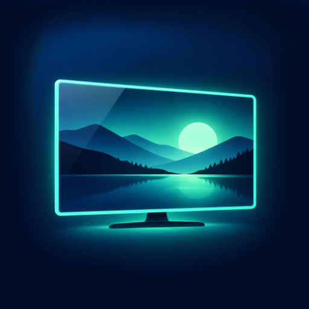
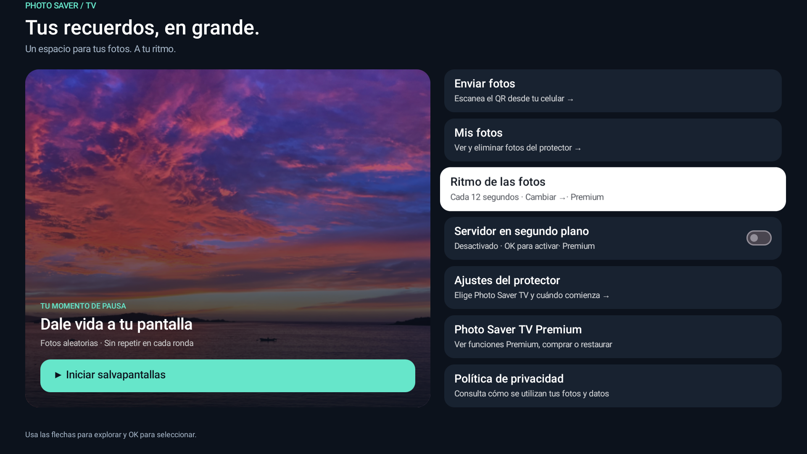
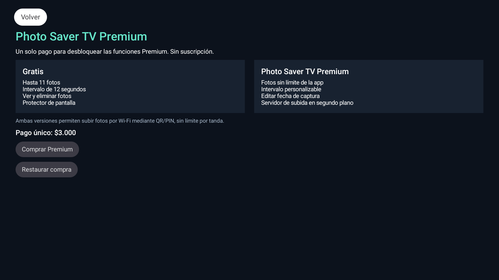

Android TV · QuirogaJ
Photo Saver TV
Convierte tu televisor en un marco de fotos. Envía tus imágenes desde otro dispositivo de tu red local y elige Photo Saver TV como protector de pantalla.
Características
Subida por Wi-Fi
Abre en el navegador el enlace que muestra la TV, escaneando el QR o escribiendo la dirección. Usa el PIN de la pantalla para enviar fotos por tu red local.
Biblioteca en la TV
Consulta las fotos de la carpeta Pictures/Screensaver con el mando. Puedes seleccionar y borrar varias a la vez con confirmación.
Gratis
Guarda hasta 11 fotos mediante la app y reproduce hasta 11 con un intervalo de 12 segundos. La biblioteca muestra todas las fotos accesibles de la carpeta.
Premium
Una compra única desbloquea el intervalo personalizable, la edición de fechas de captura compatibles, la subida en segundo plano y el uso de fotos sin tope de cantidad de la app, sujeto al espacio disponible.
Galería


Disponibilidad
Para dispositivos compatibles con Android TV o Google TV desde Android 7.0. La activación del protector de pantalla depende de los ajustes del dispositivo.
La edición de Google Play está disponible para las cuentas autorizadas en la prueba cerrada. El lanzamiento público está pendiente de confirmación.
Acceder a la prueba cerrada con la cuenta autorizada.
Si ya aceptaste la invitación, abre la ficha en Google Play con esa misma cuenta.